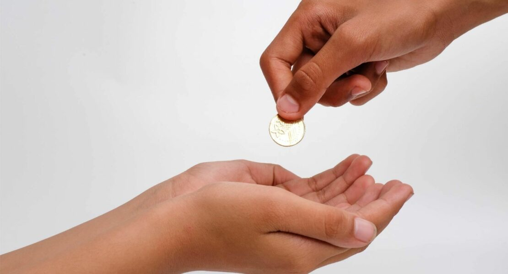

Wealth Wise
Cakupan Literasi Finansial — Bagian 3

Cakupan Literasi Finansial (Lanjutan)
- Merancang Tabungan — Setelah kebutuhan pokok terpenuhi, penting untuk menyisihkan sebagian uang untuk tabungan. Tabungan bukan hanya tempat menyimpan dana, tetapi juga sarana melatih kesabaran dan kedisiplinan. Dengan menabung, kamu bisa membeli barang idaman tanpa harus berutang sekaligus memupuk modal awal untuk investasi yang lebih besar di masa depan.
- Alokasi untuk Berbagi — Mengelola uang tidak hanya soal kebutuhan pribadi; kita juga perlu mengalokasikan sebagian rezeki untuk berbagi. Bentuknya bisa berupa pajak kepada negara, zakat bagi yang beragama Islam, sedekah kepada mereka yang membutuhkan, atau donasi sukarela untuk kegiatan sosial. Berbagi memperkuat rasa empati, tanggung jawab sosial, dan memperkaya nilai kemanusiaan dalam literasi finansial.
- Mengenali Kejahatan Finansial — Tidak semua tawaran keuangan itu baik. Penting memahami praktik buruk seperti penipuan investasi, pinjaman online ilegal, dan korupsi. Dengan literasi yang baik, kita lebih waspada terhadap modus keuangan mencurigakan—mulai dari skema ponzi, phishing, sampai penyalahgunaan data pribadi—sehingga dapat melindungi diri, keluarga, dan aset dari kerugian.